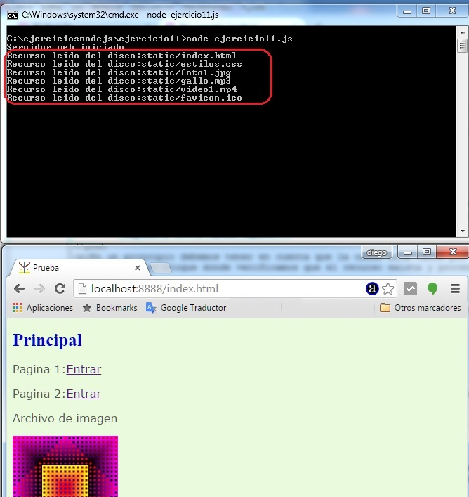
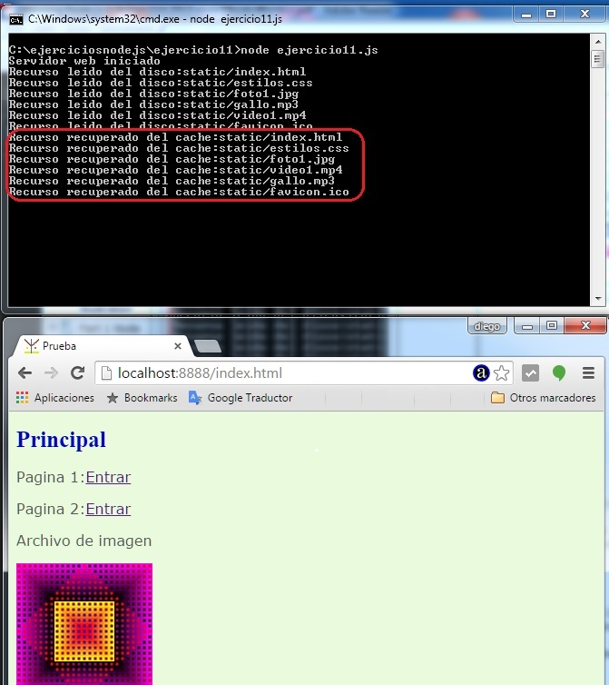
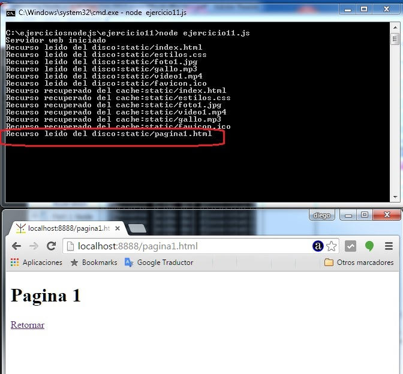

Hemos visto en los dos conceptos anteriores como crear un servidor web con Nodo.js que nos retorna distintos formatos de archivos del servidor (html, js, jpg, gif, png, css, etc.)
La mecánica que empleamos es que en casa solicitud del cliente (navegador) analizamos primero si dicho recurso se encuentra en el servidor y en caso afirmativo procedemos a leerlo mediante las funciones que provee el módulo 'fs'. Finalmente lo retornamos al navegador que solicito el recurso indicando del tipo de archivo que se trata para que el navegador pueda proceder a mostrarlo si es una imagen, renderizar si es un HTML etc.
Vamos a hacer una modificación al programa que hemos planteado hasta el momento para reducir drásticamente los tiempos requeridos de acceso al disco duro del servidor donde se almacenan los archivos. Tengamos en cuenta que el acceso a disco por operaciones de I/O son muy costosas en tiempo.
Lo que vamos a implementar es un sistema de cache en el servidor para almacenar el contenido de los archivos estáticos (es decir aquellos que no cambian) y tenerlos almacenados en la memoria RAM.
Desarrollar un sitio en Node.js que permita servir archivos estáticos y haga más eficiente su trabajo implementando un sistema de cache de los archivos servidor.
Crearemos una nueva carpeta para este proyecto con el nombre de ejercicio11 y en la misma crearemos una subcarpeta llamada static que contendrá todos los archivos html, css, jpg, mp3, mp4 etc.
En la carpeta ejercicio11 procederemos a codificar el programa en Node.js que arranca un servidor web de páginas estáticas y almacena las páginas pedidas en una cache para no tener que leerlas nuevamente del disco.
ejercicio11.js
var http=require('http');
var url=require('url');
var fs=require('fs');
var mime = {
'html' : 'text/html',
'css' : 'text/css',
'jpg' : 'image/jpg',
'ico' : 'image/x-icon',
'mp3' : 'audio/mpeg3',
'mp4' : 'video/mp4'
};
var cache={};
var servidor=http.createServer(function(pedido,respuesta){
var objetourl = url.parse(pedido.url);
var camino='static'+objetourl.pathname;
if (camino=='static/')
camino='static/index.html';
if (cache[camino]) {
var vec = camino.split('.');
var extension=vec[vec.length-1];
var mimearchivo=mime[extension];
respuesta.writeHead(200, {'Content-Type': mimearchivo});
respuesta.write(cache[camino]);
respuesta.end();
console.log('Recurso recuperado del cache:'+camino);
} else {
fs.exists(camino,function(existe){
if (existe) {
fs.readFile(camino,function(error,contenido){
if (error) {
respuesta.writeHead(500, {'Content-Type': 'text/plain'});
respuesta.write('Error interno');
respuesta.end();
} else {
cache[camino]=contenido;
var vec = camino.split('.');
var extension=vec[vec.length-1];
var mimearchivo=mime[extension];
respuesta.writeHead(200, {'Content-Type': mimearchivo});
respuesta.write(contenido);
respuesta.end();
console.log('Recurso leido del disco:'+camino);
}
});
} else {
respuesta.writeHead(404, {'Content-Type': 'text/html'});
respuesta.write('<!doctype html><html><head></head><body>Recurso inexistente</body></html>');
respuesta.end();
}
});
}
});
servidor.listen(8888);
console.log('Servidor web iniciado');
Veamos lo nuevo que le agregamos a nuestro programa para poder almacenar los contenidos estáticos de los recursos de nuestro sitio web mediante una cache en memoria.
Primero definimos un objeto vacío donde almacenaremos los nombres de los recursos y los contenidos de los mismos:
var cache={};
Cuando se dispara un pedido de recurso y se ejecuta la función anónima que le pasamos al método createServer procedemos mediante un if a verificar si el objeto cache almacena una propiedad que coincide con el camino del recurso:
if (cache[camino]) {
var vec = camino.split('.');
var extension=vec[vec.length-1];
var mimearchivo=mime[extension];
respuesta.writeHead(200, {'Content-Type': mimearchivo});
respuesta.write(cache[camino]);
respuesta.end();
console.log('Recurso recuperado del cache:'+camino);
} else {
Como vemos si el contenido está almacenado en la cache cuando escribimos dentro de la respuesta el dato a devolver procedemos a extraerlo del objeto 'cache' y accedemos a la propiedad que coincide con el recurso pedido:
respuesta.write(cache[camino]);
En un principio debemos tener en cuenta que la cache está vacía por lo que el if analizado anteriormente se verifica falso por lo que se ejecuta el otro bloque donde verificamos que el recurso exista y procedemos a su lectura del disco:
fs.readFile(camino,function(error,contenido){
if (error) {
respuesta.writeHead(500, {'Content-Type': 'text/plain'});
respuesta.write('Error interno');
respuesta.end();
} else {
cache[camino]=contenido;
var vec = camino.split('.');
var extension=vec[vec.length-1];
var mimearchivo=mime[extension];
respuesta.writeHead(200, {'Content-Type': mimearchivo});
respuesta.write(contenido);
respuesta.end();
console.log('Recurso leido del disco:'+camino);
}
});
Luego de leido procedemos a almacenar el contenido del recurso en la variable 'cache' y como valor de propiedad indicamos el camino del recurso (esto hace que quede en la cache para cualquier otra petición que surja en el servidor del mismo archivo):
cache[camino]=contenido;
Este proyecto lo puede descargar en un zip con todos los archivos js, html, jpg etc. desde este enlace : ejercicio11
En el código hemos dispuesto la impresión de dos mensajes uno cuando se lee el recurso desde el disco:
console.log('Recurso leido del disco:'+camino);
Y otro cuando se recupera el recurso desde la cache:
console.log('Recurso recuperado del cache:'+camino);
Procedamos a iniciar nuestro servidor desde la consola y solicitemos la página index.html, veamos que mensaje aparece en la consola:

Como podemos observar los seis archivos han sido leedios del disco.
Refresquemos la página para solicitar nuevamente los recursos y tenemos como salida en la consola:

Ahora vemos que los recursos se recuperan de la cache. Por último presionemos el enlace a la página 1:

La pagina1.html como todavía no se había leido no se encontraba en la cache por lo que en ese momento pasa a estar en la cache para futuros pedidos.
Tener en cuenta que estamos hablando de una cache en el servidor y no la cache del navegador. Es decir que cuando un cliente1 accede al sitio web y solicita el archivo: index.html a partir de este momento dicho archivo queda almacenado en la cache y cuando un cliente2 acceda al sitio y solicite el archivo: index.html su contenido lo recuperará de la cache y no del disco (esto hace mucho mas eficiente a nuestro programa)
Cuando detenemos nuestro programa Node.js la cache es una variable de memoria por lo que su contenido se pierde. Al arrancar nuevamente el servidor a medida que pidamos recursos la cache si irá cargando.